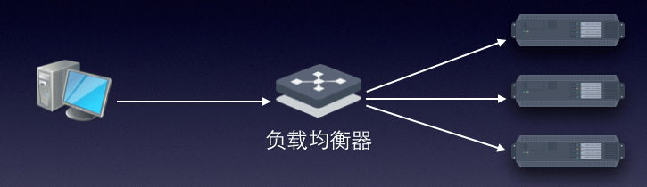
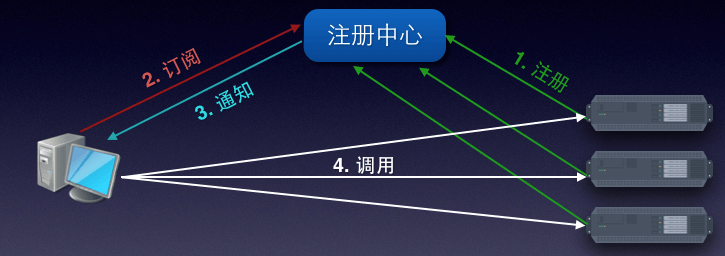
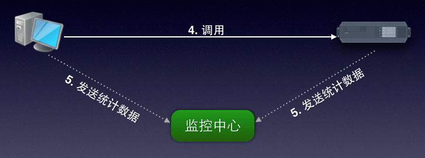
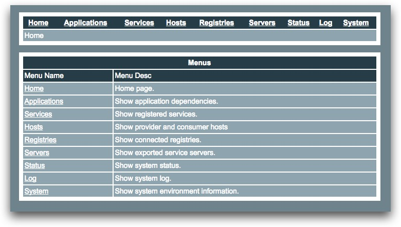
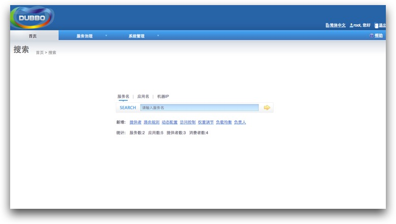

Dubbo
支持动态注册/发现服务的⾼性能分布式 RPC 框架
传统分布式 RPC 架构
- 使⽤ F5、HAProxy 等软硬件进⾏负载均衡，且需要冗余
- 服务变多时，应⽤间的依赖关系难以理清
- 压⼒变⼤时，没有扩容和降级的准确参考指标
Dubbo 架构
- 服务提供者启动，向注册中心注册自己提供的服务
- 消费者启动，向注册中心订阅自己需要的服务
- 注册中心返回服务提供者的列表给消费者
- 消费者从服务提供者列表中，按照软负载均衡算法，选择一台发起请求
Dubbo 架构
- 服务提供者和消费者会在内存中累计请求次数和耗时，每分钟将数据异步发送给监控中心
Dubbo 架构的优势

- 消费者获取服务提供者列表，自行实现软负载和容错，消除了负载均衡器的依赖，同时降低了成本
- 通过服务注册和订阅，Dubbo 可以提供所有节点间完整的依赖关系
- 通过监控中心的统计数据，了解每个服务提供者的调用量和响应时间，为扩容和降级提供依据
Dubbo 架构的优势
可伸缩性：
- 注册中心为集群，可动态增删实例
- 服务提供者无状态，可动态增删实例，注册中心将推送新实例给订阅的消费者
Dubbo 架构的优势
可用性：
- 注册中心为集群，任意一台宕机后会重新选举出主服务器继续提供服务
- 注册中心推送的服务提供者列表，将缓存在消费者，因此注册中心集群即使全部宕机也不会影响服务调用
- 监控中心宕机只会丢失统计数据，不影响服务调用
- 服务提供者无状态，任意节点宕机后，消费者会重试其他提供者；如此时注册中心可用，注册中心会通知所有订阅的消费者放弃此节点
创建 Dubbo 服务
- Dubbo 采用 Spring 配置方式，对应用没有侵入性，只需在业务层 (Service / Biz) 声明外增加 dubbo:service 的声明即可完成远程化
Dubbo 支持的协议
| 优势 | 问题 | |
|---|---|---|
| Dubbo | 采用 NIO 复用单一长连接，并使用线程池并发处理请求，减少握手和加大并发效率，性能较好 | 在大文件传输时，单一连接会成为瓶颈 |
| RMI | 可与原生 RMI 互操作，基于 TCP | 偶尔会连接失败，需重建 Stub |
| Hessian | 可与原生 Hessian 互操作，基于HTTP | 依赖 Hessian，HTTP 短连接的开销大 |
协议可独立于单个服务或全局
Dubbo 监控中心
- 目前 Dubbo 提供的 "Simple" 监控中心，是没有集群支持的单点，但故障后不影响 RPC 服务
Dubbo 服务治理中心
- 提供服务降级、容错，以及动态配置、负载均衡、权重、路由规则的调整
Dubbo 注册中心实现
| 优势 | 问题 | |
|---|---|---|
| ZooKeeper | 广泛用于服务发现，集群协调的成熟产品 | 依赖于 ZooKeeper 的稳定性 |
| Redis | 性能高 | 当前版本 (2.x) 自身不支持集群，需要特定客户端实现；对服务器时间同步要求高，用于检查心跳过期脏数据 |
ZooKeeper 简介
- ZooKeeper 现在是 Apache 的一个独立的顶级项目，它主要用来解决分布式计算中的状态同步、统一命名、分布式配置管理、集群选举、共享锁等问题
ZooKeeper 简介

- 它的数据结构就像一个标准文件系统，每个节点叫做 znode，可以存储数据，并且数据有版本
- znode 可以是临时的，当创建它的 session 失效，znode 同时会被删除
- znode 可以被订阅，当它存储的数据被修改，子节点变化都将通知已订阅的客户端
ZK 作为 Dubbo 注册中心

ZooKeeper 集群

- Zk 集群在启动时选举出一台作为 Leader，其他节点为 Follower
- 客户端无需知晓 Leader 节点，可以选择集群中的任意节点连接，发往 Follower 节点的写请求会被 foward 到 Leader
- 以便集群选举达到 Quorum，集群中的节点数量应是奇数
Dubbo 远景

分布式服务架构 (Dubbo 所处的阶段)
- 当垂直应用越来越多，应用之间交互不可避免，将核心业务抽取出来，作为独立的服务，逐渐形成稳定的服务中心，使前端应用能更快速的响应多变的市场需求
- 此时，用于提高业务复用及整合的 分布式服务框架(RPC) 是关键
Dubbo 远景
流动计算架构
- 当服务越来越多，容量的评估，小服务资源的浪费等问题逐渐显现，此时需增加一个调度中心基于访问压力实时管理集群容量，提高集群利用率
- 此时，用于提高机器利用率的 资源调度和治理中心(SOA) 是关键
Dubbo 远景

- 到下一阶段（流动计算）还缺少的部分
Dubbo 相关项目
"Dubbox" by 当当网
- 支持 REST 风格远程调用
- Kryo/FST 高效序列化实现
"Eureka" by Netflix
- 可作为 ZooKeeper 实现服务注册/发现的替代，为解决 Zk 的一些不足而开发
"Spring Security" by Spring
- 解决 Dubbo 没有提供的安全方面